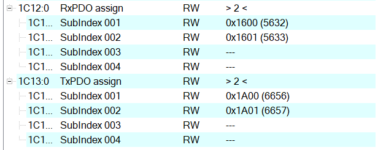

EtherCAT Slave |
 |

|
EtherCAT Slave |
|
|
The SyncManagers are configured automatically by the SDK. However, the default configuration can be changed.
The SDK configures the SyncManagers without permitting the PDO assignments. However, to set it explicitly, use the following code.
As a result, the SyncManager objects are flagged as Read Only.
Moreover, the PDOs are not possible to be assigned to the SyncManagers. Notice that the SyncManagers contain the 'F' character, which means that they are fixed.
To permit changes on the SyncManager PDO assignment, use the following code.
As a result, the SyncManager objects are flagged now as Read Write.
Therefore, the PDOs are possible to be assigned to the SyncManagers and notice that the fixed mark is now gone.
It is possible to change the number of permitted SyncManager subIndexes by using the following code. It will permit assignments until a certain limit.
\code{.c}
EC_API_SLV_PDO_setSyncManMaxSubIndex(pAppInstance_p->ptEcSlvApi, 2, 4);
EC_API_SLV_PDO_setSyncManMaxSubIndex(pAppInstance_p->ptEcSlvApi, 3, 4);
\endcode

td |
 1.9.7
1.9.7